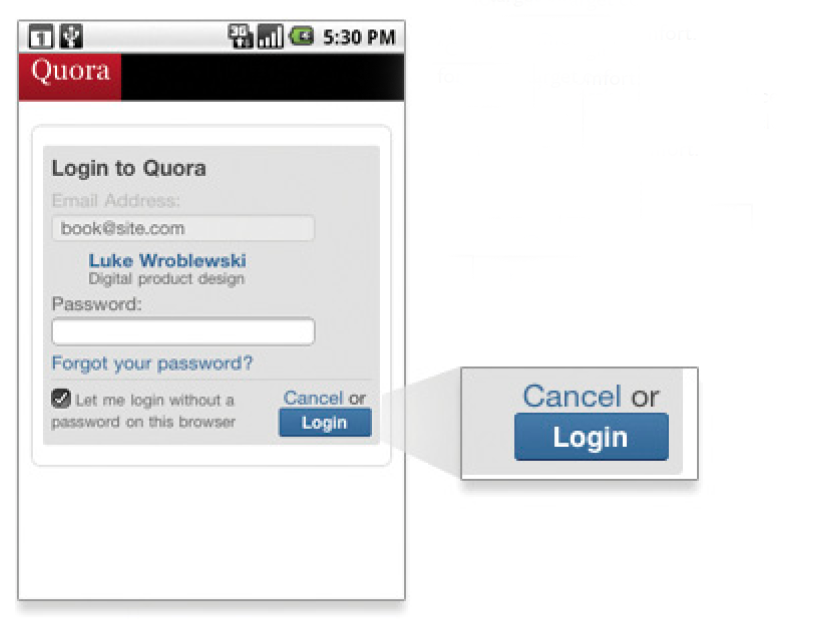

Oltre il Responsive Design una strategia scalabile per essere online su tutti i device
1-THE RWD
25 maggio 2010
“Responsive design is not about ‘designing for mobile’. But it’s not about ‘designing for the desktop’, either. Rather, it’s about adopting a more flexible, device-agnostic approach to designing for the web.”
John Allsopp
“A Dao of Web Design”
The control which designers know in the print medium, and often desire in the web medium, is simply a function of the limitation of the printed page. We should embrace the fact that the web doesn’t have the same constraints, and design for this flexibility. But first, we must “accept the ebb and flow of things.” Now, John was writing during the web’s early years, a period of transition when designers transferred print-centered design principles onto this young, new medium.
Room for just what actually matter
ELEMENTS OF RESPONSIVE DESIGN
- A flexible, grid-based layout
- Flexible images and media
- Media queries, a module from the CSS3 specification
@media handheld and (min-width: 20em),screen and (min-width: 20em) { … }
2. WE NO LONGER LIVE IN A SINGULAR DEVICE WORLD
Global smartphone shipments surpassed global Pc shipments two years earlier than predicted. Studies have projected that mobile internet use will surpass traditional desktop internet use by 2014 (source: Mary Meeker – Morgan Stanley)
MOBILE-ONLY ACCESS
Others have shown that 25% of US internet users are mobile-only, meaning they never or rarely access the internet via laptop or desktop computers (source – Alistair Hill – On Device Research )
-
That means more people will be using mobile devices to access the web than those getting online with desktops and laptops. This transition has already started. Home usage of personal computers in 2010 was down 20% from 2008 in the United States. The culprit? Smartphones and tablets gobbling up our time online.
-
Traffic to mobile websites in 2010 grew 600% after tripling between 2009 and 2010
-
And it’s only going to get bigger. While half a billion people accessed the mobile internet worldwide in 2009, heavy mobile data users will triple to one billion by 2013
THE HURRIED BUSINESSMAN ON THE STREET
3. 500% ONLINE
* when and where
-
84% use them at home
-
80% use them during miscellaneous downtime throughout the day
-
74% use them while waiting in lines or waiting for appointments
-
69% use them while shopping
-
64% use them at work
-
62% use them while watching TV (a different study claims 84% )
-
And 47% use them during their commute
* why
Source: At&t, Morgan Stanley research.
* time
grey computer green tablet and smartphones
4. ALLIGN WITH THE MOBILE BEHAVIOUR
“TAPWORTHY ”
author Josh Clark on Mobile user segmentation
-
Lookup/Find (urgent info, local): I need an answer to some- thing now—frequently related to my current location in the world.
-
Explore/Play (bored, local): I have some time to kill and just want a few idle time distractions.
-
Check In/Status (repeat/micro-tasking): Something important to me keeps changing or updating and I want to stay on top of it.
-
Edit/Create (urgent change/micro-tasking): I need to get some- thing done now that can’t wait.

5. IT IS NOT ONLY ABOUT WEB, IS ABOUT CONTENT
RESPONSIVE EMAILS
As further proof, consider that in November 2010 visitors to web-based email sites declined 6%, but visitors accessing email with their mobile devices grew by 36%.
-
Inline style
-
No font support
-
Min and max device with media queries
-
Use just few images
-
Create the plain text email
DIGITAL QR CODE
STOP USING CAPTCHA FOR SPAM CONTROL
The onus for stopping spam should not fall on your legitimate visitors. Making it more difficult for real people to sign up for an account, request information, or otherwise fill out a form on your site is not worth the trade-off. The burden of spam control should fall squarely on the shoulders of the site owner, and not on the site visitor. Find a new way to control spam, preferably through better filtering and back-end management. This is not the first time a change like this has been proposed, but it’s time that it start being more widely adopted by the design community.
6. NUI AND NEW INTERACTIONS
7. NATIVE APPS
“WEB LINKS DON’T OPEN APPS, THEY GO TO WEB PAGES”
JASON GRIGSBY
- Access to the address book
- SMS
- camera
- audio inputs
- built-in sensors
- Run processes in the background
- Easily monetize through mobile app stores or in-app purchases.
Core features like
14% of Twitter’s members use the mobile web experience compared to 8% using the native iPhone app and 7% using the Blackberry native app. Close to 19% of Facebook posts are created on the mobile web experience, while Facebook’s native iPhone, Android, and Blackberry apps only account for about 4% of posts each. Yelp. Their mobile products are used by just 7% of their total audience but are responsible for 35% of all their searches.
8. ONE EYEBALL AND ONE THUMB

INPUT TYPE HTML
checkbox <input type="checkbox">
radio button <input type="radio">
password field <input type="password">
dropdown lists <select><option>...
file picker </option></select><input type="file">
submit button <input type="submit">
plain text <input type="text">
9. 2013 THE YEAR OF RESPONSIVE DESIGN
- Responsive Typography
One, the type can be resized for the device it’s being viewed on or by the reader themselves. The other involves optimized line lengths to maintain readability.
- Native device supported fonts * Proper font stack
- Tool for font stack
- Better Understanding of Device Capabilities
FLEXIBLE MEDIA, IMAGES AND VIDEOS
Are responsive in HTML to the width and height of a screen. They’re set at their max-width of 100% but this is hard to do right. We can either use CSS and scaling with the grid, or we can load the right resource for a particular device. The latter is a bit of a pain because even with swapping smaller images for larger ones, both resources will load and choke the performance of the page.
- Sprite technique Mobile sprite technique
-
More Variations in Layout
Susy and the responsive grid 7 to 16

Mobile 7 -> 10
- Better Media Support
On August 29, 2012, the W3C released in draft the proposal HTML Responsive Images Extension, containing the specifications for the creation of a new html tags in order to overcome the limitations of and allow Web pages to see different images depending on factors such as resolution and density of the screen used by the user.
- Cost estimation
Fixed width website 1x img website 1.5x Responsive design 2.5x
RESOURCES
Responsive email tutorial LevelUpTuts
html5 responsive email template
html5 responsive template for websites